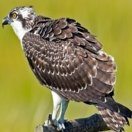

Osprey

¡Descubre al asombroso Osprey!
- ¡Bienvenido al mundo del Osprey, un experto pescador del cielo!
- Su nombre científico es Pandion haliaetus, pero puedes llamarlos "Ospreys". ¡Un nombre único y genial, verdad?
- Los Ospreys viven cerca del agua y son conocidos por atrapar peces con sus garras afiladas. ¡Son como los superhéroes de la pesca! 🎣🦅
- Aunque no son nativos de las Islas Galápagos, podrías tener la suerte de avistarlos durante sus migraciones. ¡Imagina ver a este maestro pescador en acción!
- ¡Sorpresa! Los Ospreys construyen nidos gigantes en lugares altos, ¡como sus propias casas en los árboles!
- Es esencial proteger a los Ospreys y su hábitat para que todos podamos disfrutar de su majestuosidad. ¡Disfruta explorando el mundo de estas aves fascinantes!
¡Descubre al Osprey!
- ¡Bienvenido al mundo del Osprey, un experto pescador del cielo!
- Nombre Científico: Pandion haliaetus (Osprey)
- Los Ospreys son aves impresionantes que se especializan en la pesca, ¡pueden sumergirse y atrapar peces con sus garras afiladas!
- Estado de Conservación: No en peligro, pero es crucial respetar su entorno y disfrutar de su belleza de manera responsable.
- ¿Dónde verlos? Aunque no son nativos de las Islas Galápagos, podrías avistarlos durante sus migraciones, especialmente cerca de cuerpos de agua.
- ¡Curiosidad turística! Los Ospreys son maestros constructores de nidos, ¡imagina ver sus nidos gigantes en lo alto de los árboles o postes!
- Recuerda mantener una distancia segura para no perturbar a estas aves mientras realizan sus actividades diarias. ¡Buen viaje!
Información para biólogos:
- Nombre Científico: Pandion haliaetus (Osprey)
- Estado de Conservación: Preocupación Menor
- Distribución Geográfica: Amplia distribución global, migratorio; no nativo de las Islas Galápagos
- Hábitat: Cerca de cuerpos de agua, costas marinas
- Origen: No nativo de las Islas Galápagos; podrían avistarse durante sus migraciones
- Presencia en el Hábitat: Pueden avistarse ocasionalmente durante migraciones
- Dieta: Principalmente peces, especializados en pesca
- Peso: Alrededor de 1.5 kg (puede variar según la región)
- Nidificación: Construyen grandes nidos en lugares elevados
- Migración: Viajan largas distancias entre sus áreas de reproducción y alimentación
- Nombres Relacionados: Águila pescadora